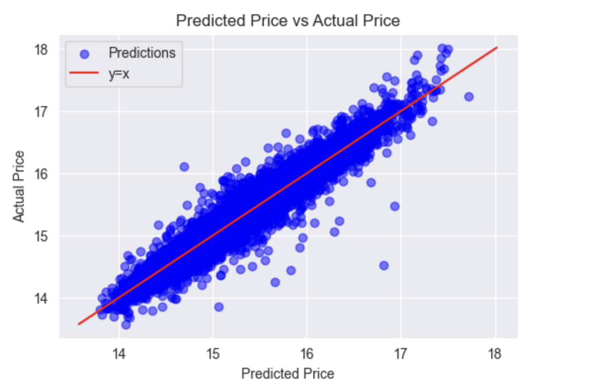
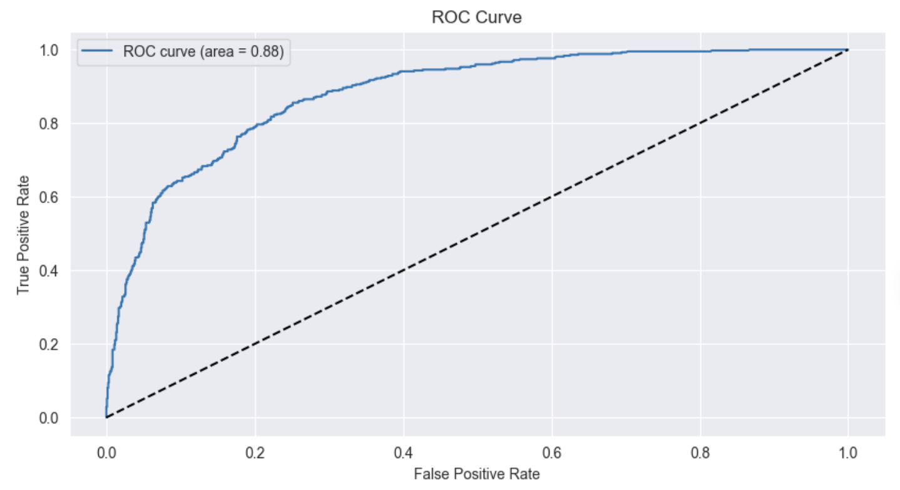

The project aims to leverage machine learning to predict property sales prices in the Stockholm municipality. Real estate in prosperous cities like Stockholm has long been a subject of debate and speculation. Despite the complexity of the market, decisions still need to be made, and relying solely on forecasts is unwise. Many properties in Stockholm are part of housing associations, and their financial situations can significantly impact buyers. The company has access to a database with almost ten years of historical sales data and some annual reports for housing associations. However, the data has flaws and inconsistencies. Given the regulated environment, a validation committee must review statistical models before deployment. Hence, equal emphasis is placed on model performance, documentation, testing, and code readability.
Click to See Code You're now part of KindCorp, a leading life insurance company in Europe, collaborating with the Finnish private hospital Ei Saa Peittää Oy. Your task is to enhance the hospital's services using KindCorp's advanced data science modeling expertise. You have access to anonymized patient records, a past study on patient mortality rates (which recently restarted with new patients), and results from individual patient examinations upon admission, all stored in the Survivability database schema. You're expected to treat the historical study population as comparable to the current patient intake. Specializing in seriously ill patients, the hospital seeks your assistance in estimating the survival rate for current patients. Hospital director Parasta Ennen is relying on your data science skills to improve care, so there's pressure to deliver impactful results.
https://github.com/itsyouryaffa/code/blob/aa6a1f045003ff00fb67ee4a83fa4801237a46e2/HospitalPatientsSurvivalPrediction.ipynb 